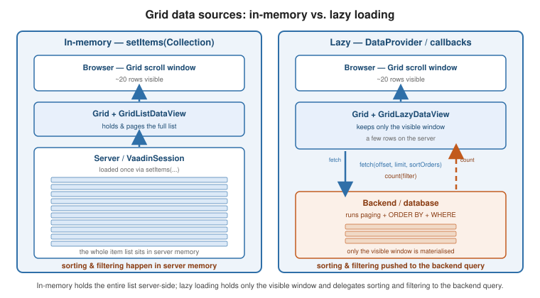

The Grid Component
|
This content was generated with the assistance of AI and should be verified against the official documentation before being relied on in production. |
Grid<T> is Vaadin’s table component: a typed, virtual-scrolling data grid that renders only the visible rows
and asks the server for more as the user scrolls. This page follows
the Grid documentation and
Add a Grid. In Vaadin 7 this role was filled by
Table and the Container data model; Grid and DataProvider replaced both.
Defining columns
A column maps a row object to a displayed value. The simplest form takes a ValueProvider — any
T -> ? function — and a header:
Grid<Person> grid = new Grid<>();
grid.addColumn(Person::getFirstName).setHeader("First name");
grid.addColumn(Person::getLastName).setHeader("Last name");
grid.addColumn(person -> person.getFirstName() + " " + person.getLastName())
.setHeader("Full name");new Grid<>(Person.class) auto-generates one column per bean property; grid.setColumns("firstName", "email")
then narrows and orders them.
Give a column a key to look it up later, and a sort property so a click on the header sorts through the backend rather than in memory:
Grid.Column<Person> last = grid.addColumn(Person::getLastName)
.setKey("lastName")
.setHeader("Last name")
.setSortProperty("lastName")
.setAutoWidth(true)
.setFlexGrow(0);
grid.getColumnByKey("lastName").setFrozen(true);Renderers
A renderer controls the cell’s markup. NumberRenderer and LocalDateRenderer format primitives;
ComponentRenderer puts a live Vaadin component in the cell; LitRenderer builds the cell from a client-side
template string, which scales to far more rows because nothing is created server-side per row.
grid.addColumn(new NumberRenderer<>(Person::getSalary, NumberFormat.getCurrencyInstance()))
.setHeader("Salary");
grid.addColumn(new LocalDateRenderer<>(Person::getHireDate, "yyyy-MM-dd"))
.setHeader("Hired");
grid.addComponentColumn(person -> {
Button edit = new Button("Edit", e -> openEditor(person));
edit.addThemeVariants(ButtonVariant.LUMO_SMALL);
return edit;
}).setHeader("Actions");
grid.addColumn(LitRenderer.<Person>of(
"<span class=\"badge\">${item.status}</span>")
.withProperty("status", Person::getStatus))
.setHeader("Status");See Grid renderers.
In-memory data
Pass a collection to setItems(...) and the whole list lives in server memory; the Grid pages, sorts and
filters it client-side. getListDataView() (a GridListDataView) then adds, removes, filters and iterates
items:
GridListDataView<Person> view = grid.setItems(personService.findAll());
view.addFilter(p -> p.getAge() >= 18);
view.setSortOrder(Person::getLastName, SortDirection.ASCENDING);
int rows = view.getItemCount();This is the right choice up to a few thousand rows. Beyond that, load lazily.
Lazy loading
For large datasets, give the Grid two callbacks: a fetch callback that returns one page
(offset, limit, requested sort orders) and a count callback that returns the total. The Grid calls them
as the user scrolls, so only the visible window is ever materialised.
grid.setItems(
query -> personService.fetch(
query.getOffset(),
query.getLimit(),
VaadinSpringDataHelpers.toSpringDataSort(query)).stream(),
query -> personService.count());getLazyDataView() (a GridLazyDataView) exposes setItemCountEstimate(...) for unknown totals and
refreshAll() / refreshItem(item) after a write. For full control, implement DataProvider<T, F> (or extend
AbstractBackEndDataProvider) and pass it to setItems(dataProvider); a CallbackDataProvider wraps the same
two callbacks with an id mapper. Backend sorting and filtering are driven from the Query object’s
getSortOrders() and getFilter(). See
Data Providers.

Worked example: a lazy, sortable, filterable customer grid
Real screens combine paging, sorting and a filter box. The pieces are a data provider whose callbacks receive the
filter as well as the page, a ConfigurableFilterDataProvider that lets the view change that filter, and a
mapping from the grid’s sort orders to the backend’s.
Grid<Customer> grid = new Grid<>(Customer.class, false);
grid.addColumn(Customer::getLastName).setKey("lastName")
.setHeader("Last name").setSortProperty("lastName");
grid.addColumn(Customer::getFirstName).setKey("firstName")
.setHeader("First name").setSortProperty("firstName");
DataProvider<Customer, String> provider = DataProvider.fromFilteringCallbacks(
query -> service.list(query.getOffset(), query.getLimit(),
query.getFilter().orElse(null), query.getSortOrders()).stream(),
query -> service.count(query.getFilter().orElse(null)));
ConfigurableFilterDataProvider<Customer, Void, String> filtered = provider.withConfigurableFilter();
grid.setItems(filtered);
TextField filterField = new TextField();
filterField.setPlaceholder("Filter by name");
filterField.setValueChangeMode(ValueChangeMode.LAZY);
filterField.addValueChangeListener(e -> filtered.setFilter(e.getValue())); // refreshes the gridsetFilter triggers a refresh on its own, so the filter field needs no extra call. Each QuerySortOrder carries
the sort property named in setSortProperty and a direction; a SQL or JPA backend turns the list into an
ORDER BY (see Data Persistence). For an in-memory backend, a small mapping is enough:
static Comparator<Customer> toComparator(List<QuerySortOrder> orders) {
Comparator<Customer> result = Comparator.comparing(Customer::getId); // stable default order
boolean first = true;
for (QuerySortOrder order : orders) {
Comparator<Customer> next = switch (order.getSorted()) {
case "lastName" -> Comparator.comparing(Customer::getLastName);
case "firstName" -> Comparator.comparing(Customer::getFirstName);
default -> Comparator.comparing(Customer::getId);
};
if (order.getDirection() == SortDirection.DESCENDING) {
next = next.reversed();
}
result = first ? next : result.thenComparing(next);
first = false;
}
return result;
}Against four customers (Lovelace, Turing, Hopper, Torvalds), sorting the Last name column descending returns
Turing, Torvalds, Lovelace, Hopper; filtering by tur leaves one row; clearing the filter restores all four.
The diagram shows why the callbacks must be cheap and deterministic: a scroll, a sort click and a filter change each produce fresh calls, and a fetch that returns rows in a different order for the same query makes rows jump under the user’s eyes.
Selection
Grid is single-select by default. Switch modes, or take a typed selection model:
grid.setSelectionMode(Grid.SelectionMode.MULTI); // adds the checkbox column
grid.asSingleSelect().addValueChangeListener(e -> {
Person selected = e.getValue();
editor.setVisible(selected != null);
});
Set<Person> checked = grid.asMultiSelect().getValue();Item details and styling
An item-details renderer shows an expandable panel under a row. Part-name generators attach CSS part names to
rows or cells so the theme can style them (vaadin-grid::part(overdue)), and a context menu adds per-row
actions:
grid.setItemDetailsRenderer(new ComponentRenderer<>(person -> {
var layout = new VerticalLayout(new Span("Phone: " + person.getPhone()));
layout.setPadding(false);
return layout;
}));
grid.setPartNameGenerator(person ->
person.getBalance().signum() < 0 ? "negative" : null);
GridContextMenu<Person> menu = grid.addContextMenu();
menu.addItem("Delete", e -> e.getItem().ifPresent(this::delete));See Styling Grid and Theming and Styling.
Editing rows
The built-in Grid editor binds a row to inline fields through a Binder, opened on a double-click or a
button:
Binder<Person> binder = new Binder<>(Person.class);
Editor<Person> editor = grid.getEditor();
editor.setBinder(binder);
editor.setBuffered(true);
TextField firstNameField = new TextField();
binder.forField(firstNameField).bind("firstName");
firstNameColumn.setEditorComponent(firstNameField);
grid.addItemDoubleClickListener(e -> editor.editItem(e.getItem()));Grid Pro (a commercial component — see
UI Component Libraries) adds spreadsheet-style inline editing that commits each cell on
blur, with EditColumn types for text, checkbox and select.
TreeGrid
TreeGrid<T> renders a hierarchy: one column is a hierarchy column, and a HierarchicalDataProvider (or
TreeData for in-memory trees) answers "children of this node" and "does this node have children".
TreeGrid<FileNode> tree = new TreeGrid<>();
tree.addHierarchyColumn(FileNode::getName).setHeader("Name");
tree.addColumn(FileNode::getSize).setHeader("Size");
tree.setItems(rootNodes, FileNode::getChildren); // in-memory TreeDataSee Tree Grid.
Exporting
The core Grid has no built-in export. The open-source GridExporter add-on (Flowing Code, Apache-2.0)
streams the current rows and columns to Excel, PDF, CSV or DOCX — see
UI Component Libraries. For a hand-rolled CSV, iterate the data view and write a
StreamResource behind an Anchor.
To build Word and Excel files yourself from the grid’s data, see Office Files (Word and Excel with Apache POI).
Worked example: exporting the visible rows to CSV
An export should contain the rows the user is looking at — the current filter and sort, but not just the page in
the browser. A data view’s getItems() returns exactly that stream (for a lazy grid it runs the fetch callback
for the whole result set), which makes a CSV export a few lines of ordinary Java.
record Col(String header, Function<Customer, String> value) { }
static String csvCell(String text) {
if (text == null) {
return "";
}
boolean needsQuotes = text.contains(",") || text.contains("\"")
|| text.contains("\n") || text.contains("\r");
return needsQuotes ? "\"" + text.replace("\"", "\"\"") + "\"" : text;
}
static String toCsv(Stream<Customer> rows, List<Col> columns) {
StringBuilder out = new StringBuilder();
out.append(columns.stream().map(c -> csvCell(c.header())).collect(Collectors.joining(",")))
.append("\r\n");
rows.forEach(row -> out.append(columns.stream()
.map(c -> csvCell(c.value().apply(row))).collect(Collectors.joining(",")))
.append("\r\n"));
return out.toString();
}A cell is quoted when it contains a comma, a quote or a line break, and quotes inside it are doubled, as RFC 4180
requires. Exporting a customer named Ada, Countess O"Neil therefore produces
"Ada, Countess","O""Neil",a@b.c for the first name, last name and email columns. Offer the result as a download
with a StreamResource behind an Anchor, created while a UI is current (that is, in a view constructor or an
event handler):
List<Col> columns = List.of(
new Col("First name", Customer::getFirstName),
new Col("Last name", Customer::getLastName),
new Col("Email", Customer::getEmail));
StreamResource csv = new StreamResource("customers.csv", () -> {
String text = toCsv(grid.getGenericDataView().getItems(), columns);
return new ByteArrayInputStream(text.getBytes(StandardCharsets.UTF_8));
});
csv.setContentType("text/csv");
Anchor export = new Anchor(csv, "Export CSV");
export.getElement().setAttribute("download", true);
add(export);The input stream factory runs when the browser requests the file, so the export reflects the grid’s state at that
moment rather than when the view was built. Prepend a UTF-8 byte order mark ("") if the file is meant for
Excel and contains accented characters. Very large exports should bypass the grid and stream rows straight from the
database instead of materialising them.
See also
-
Data Binding — the
Binderthe Grid editor and lazy sorting rely on. -
Forms, CRUD and Master-Detail — a Grid wired to an editor form.
-
Data Persistence — backing the lazy callbacks with Spring Data or jOOQ.
-
UI Component Libraries — Grid Pro and the export add-on.
-
Grid and Add a Grid — the official references.